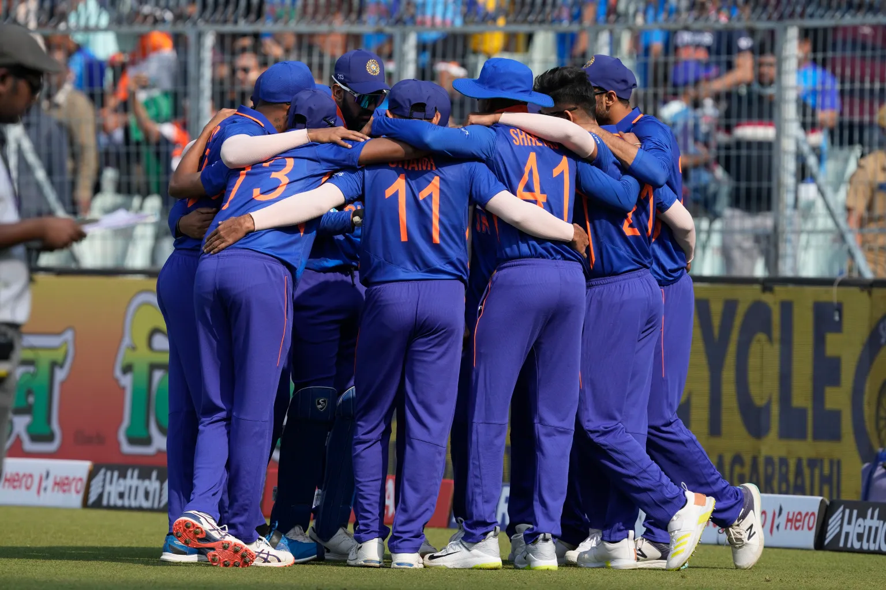

THE INDIAN CRICKET TAME
The Indian cricket team, known as the Men in Blue, is the most popular cricket team in the world.
Governed by the Board of Control for Cricket in India (BCCI), the team played its first international match in 1926 and has produced some of the most talented cricketers in the world.
The team has won numerous major tournaments, including the 1983 and 2011 ICC Cricket World Cup .
ABOUT THE INDIAN CRICKET TEAM
Test and ODI Captain – Rohit Sharma
T20I Captain – Hardik Pandya
Head Coach – Rahul Dravid
Bowling Coach – Paras Mhambrey
Batting Coach – Vikram Rathour
Fielding Coach – T Dilip
Physio – Nitin Patel
Sponsors – Byju’s (national team), Killer (apparel), Mastercard, TATA (IPL), Dream11, Hyundai, Ambuja Cements, Star Sports (official broadcaster)
The Indian cricket team is undoubtedly the most popular cricket team in the world, with die-hard fans not just in the country but all over the globe. Governed by the Board of Control of Cricket in India (BCCI), the Indian team played its first international match (Test) on June 25, 1932, against England at Lord’s. CK Nayudu was the first captain of India in Test cricket. Two decades later, India registered its first Test win against England in Madras (now Chennai) in 1952 in their 24th match. Lala Amarnath was the first Indian batter to score a Test hundred.
In white-ball cricket, India made their ODI and T20I debuts in 1974 and 2006, respectively. Over the years, the Indian team has produced some fantastic talents across formats. Sunil Gavaskar, Kapil Dev, Gundappa Viswanath, Dilip Vengsarkar, Erapalli Prasanna, Bhagwat Chandrasekhar, Bishen Singh Bedi, Sachin Tendulkar, Sourav Ganguly, Virender Sehwag, VVS Laxman, Anil Kumble, Virat Kohli, Rohit Sharma and Jasprit Bumrah are some of the most famed Indian cricketers.
At the time of filing this report, India are ranked second in Tests, fourth in ODIs and first in T20Is as per the official ICC rankings. Rohit Sharma is the current Indian captain in Tests and ODIs. Hardik Pandya has led the T20I side recently. While Rahul Dravid is the head coach of the Indian cricket team, Vikram Rathour (batting), Paras Mhambrey (bowling) and T Dilip (fielding) are the other India cricket team coaches.

INDIAN CRICKET VIDEO
RECORDS BY TEAM
- Closest draw by runs remaining in Tests – 1 run vs West Indies at Wankhede Stadium in Mumbai, November 2011.
- Winning after having to follow in Tests since 2000 – vs Australia by 171 runs, Eden Gardens in Kolkata, March 2001.
- Most consecutive series win in Tests – 9 from 2015 to 2017/18.
- Most consecutive innings of 400 plus in Tests – 6
- Most sixes in a Test match – 37 in Visakhapatnam, October 2019
- Most runs from fours and sixes in T20I innings – 210 vs Sri Lanka in Indore, December 2017
- First batter to 100 international hundreds – Sachin Tendulkar
- First batter to three ODI double hundreds – Rohit Sharma
- First batter to 4000 T20I runs – Virat Kohli
MAJOR STADIUMS
- Eden Gardens, Kolkata
- Wankhede Stadium, Mumbai
- Narendra Modi Stadium, Gujarat
- Arun Jaitley Stadium, Delhi
- MA Chidambaram Stadium (Chepauk), Chennai
- M. Chinnaswamy Stadium (Bengaluru)
TROPHIES AND AWARD
Below is a list of major tournaments won by the Indian cricket team across formats:
| Year | Trophy / Award |
| 1983 | ICC Cricket World Cup |
| 1984 | Asia Cup |
| 1985 | World Championship of Cricket (Declared as the Team of the Century by Wisden) |
| 1988 | Asia Cup |
| 1990/91 | Asia Cup |
| 1993 | Hero Cup |
| 1995 | Asia Cup |
| 2002 | ICC Champions Trophy (shared with Sri Lanka) |
| 2007 | ICC T20 World Cup |
| 2010 | Asia Cup |
| 2011 | ICC Cricket World Cup |
| 2013 | ICC Champions Trophy |
| 2016 | Asia Cup (T20I) |
| 2018 | Asia Cup |
| Border-Gavaskar Trophy (9) Test series against Australia | |
| Pataudi Trophy (1) Test series against England |
Team India Address – Cricket Centre, 2nd Floor, Wankhede Stadium, ‘D’ Road, Churchgate, Mumbai 400 020, India
Contact Number – + (91) 22 2289 8800
Email Address – office@bcci.tv
Website– http://www.bcci.tv/